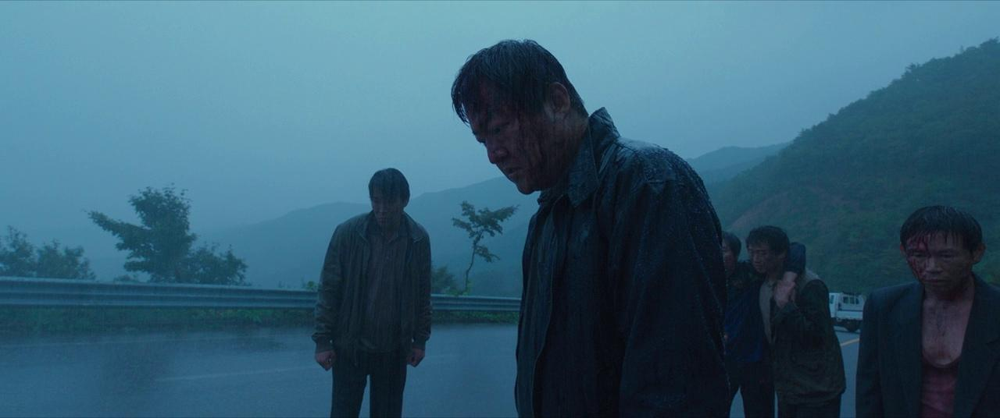

11/5/2023
Where to Watch? Netflix
"The Wailing," directed by Na Hong-jin in 2016, is a cinematic masterpiece that skillfully weaves the theme of uncertainty throughout its narrative. This South Korean horror-thriller takes its audience on a spine-tingling journey into the heart of darkness, leaving us with more questions than answers as we grapple with the enigmatic forces at play.
The film's protagonist, Jong-Goo, a bumbling small-town policeman, finds himself facing a series of bizarre and gruesome murders in his community. As the mysterious events escalate, his once tranquil life descends into chaos. Na Hong-jin expertly captures the essence of uncertainty, immersing the viewer in a world where the line between good and evil, reality and illusion, is blurred.
The uncertainty begins with the very premise of "The Wailing." Is this a supernatural horror film, a psychological thriller, or a social commentary on fear and paranoia? The director masterfully keeps us guessing, refusing to confine the story to one genre, which keeps the audience on the edge of their seats, unsure of what will happen next.
The uncertain moral landscape of the film further deepens the ambiguity. The characters in "The Wailing" grapple with their own sense of right and wrong as they confront the evil presence that has descended upon their village. Each character is tainted by a shade of darkness, and the boundaries between heroes and villains become indistinct, leaving us to ponder the nature of good and evil.
The film's cinematography and atmosphere contribute to this pervasive feeling of uncertainty. The eerie landscapes of the village, the foreboding forests, and the dimly lit interiors create an atmosphere of dread and suspense. As viewers, we are uncertain about what lurks in the shadows, what is real, and what is imagined. Every shot adds to the unsettling atmosphere, keeping us perpetually in the dark.
"The Wailing" is a movie that keeps you guessing until the very end. Even as the credits roll, questions remain unanswered, and the ambiguity lingers. What were the true motives of the characters? Was the evil supernatural or a manifestation of their own fear and paranoia? The uncertainty that haunts the film is its ultimate triumph, leaving a lasting impression and sparking countless discussions and interpretations.
"The Wailing" is a cinematic tour de force that immerses viewers in a world of uncertainty, challenging our perceptions of reality and the supernatural. Na Hong-jin's brilliant direction, combined with outstanding performances, creates a haunting and thought-provoking experience that will leave you pondering the mysteries of human nature and the unexplained long after the credits roll. If you're a fan of films that revel in ambiguity and psychological complexity, "The Wailing" is a must-watch that will keep you enthralled and guessing from start to finish.